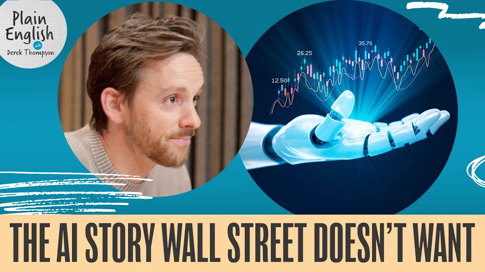

השימוש ב־AI עולה. ההוצאה מתחילה להיבלם.
הצד שוול סטריט מתקשה לראות אינו מספר השבבים או מרכזי הנתונים, אלא מי באמת משלם על המודלים. נתוני Ramp חושפים שוק ריכוזי, תחרותי וזול יותר, שבו הלקוחות עשויים לנצח גם אם מעבדות המודלים יתקשו.

1. השאלה הלא נכונה היא כמה בונים. השאלה הנכונה היא מי ישלם
רוב הדיון על ״בועת AI״ מתחיל בצד ההיצע: אמזון, מיקרוסופט, גוגל ומטא מוציאות סכומים עצומים על שבבים, מרכזי נתונים וחשמל, ובחלק מהמקרים כבר פונות לחוב. ההיסטוריה נותנת סיבות טובות לחשד. מסילות ברזל במאה ה־19 וסיבים אופטיים בתקופת הדוט־קום מומנו בציפייה לביקוש שלא תמיד הגיע. תומפסון מזכיר שבאמצע שנות ה־1890 כרבע מאורך מסילות הרכבת בארצות הברית היה בהליכי פשיטת רגל, ושאחרי בועת הדוט־קום רק חלק קטן מאוד מהסיבים שהונחו היה בשימוש.
אבל הוא מציג שלושה הבדלים חשובים. ראשית, החברות שמובילות את הבנייה היום הן מהעסקים הרווחיים בהיסטוריה, לא יזמיות מסילה דקיקות מהון. שנית, לפי התמונה הנוכחית כמעט כל שבב AI זמין עובד, והלקוחות משלמים פרמיה כדי לשכור חישוב. שלישית, צד ההיצע שקוף יחסית: יודעים מי מייצר, מי קונה, מי בונה ומי מספק חשמל.
צד הביקוש הרבה יותר מעורפל. OpenAI ו־Anthropic פרטיות, אין דוחות רבעוניים מלאים, והציבור נע בין הדלפות והערכות. תומפסון מצביע על דיווחים סותרים לגבי קצב ההכנסות של OpenAI, בהפרש של עשרות אחוזים. לכן, לדבריו, ההימור הטכנולוגי הגדול ביותר של התקופה נשען על מספרי הכנסה שקשה מאוד לבדוק.
2. למה Ramp רואה משהו שהמעבדות עצמן אינן רואות
ארה חרזיאן הוא הכלכלן הראשי של Ramp ומנהל את מעבדת הכלכלה שלה. Ramp מפעילה כרטיסים עסקיים, תשלומי חשבונות והעברות עבור יותר מ־85 אלף עסקים בארצות הברית. לפי חרזיאן, הפלטפורמה רואה יותר מ־275 מיליארד דולר של הוצאות עסקיות בשנה, ובהן יותר מ־10 מיליארד דולר של הוצאות AI.
זו אינה תמונה מלאה של הכלכלה, אבל יש לה יתרון ייחודי: Anthropic יודעת כמה לקוחות משלמים ל־Anthropic, ו־OpenAI יודעת כמה הם משלמים ל־OpenAI. Ramp יכולה לראות חברה אחת מחלקת את התקציב בין כמה מודלים, יישומי AI וספקים. כך אפשר להבחין בין ירידה בשימוש לבין ירידה במחיר, ובין נאמנות למודל אחד לבין קנייה אופורטוניסטית בשוק של תחליפים.
הסיפור ההיסטורי שחרזיאן מתאר מתחיל ב־ChatGPT כמוצר צרכני. בתחילה לא היה ברור אם ארגונים ישלמו בקנה מידה גדול. OpenAI הפכה לברירת המחדל, ואז Anthropic צמחה במהירות, במיוחד לאחר שהוכיחה ערך מסחרי חד דרך כלי קוד. סוכני קוד יצרו את אחת מהוכחות ה־ROI הברורות ביותר של הדור: מהנדסים יכולים לייצר, לבדוק ולתקן יותר תוכנה. ההצלחה הזו משכה עוד השקעה בתשתית. כעת השאלה היא אם אפשר לשכפל אותה גם מחוץ לקוד.
3. שוק עצום, אבל ריכוזי באופן קיצוני
הנתון שתופס את תשומת הלב הוא שאחוז אחד מהחברות במדגם אחראי לכ־80% מההוצאה על OpenAI ו־Anthropic. הריכוזיות כשלעצמה אינה הוכחה לבועה. חרזיאן מציין שגם בפרסום דיגיטלי חלק גדול מההכנסה מגיע מהלקוחות הגדולים ביותר.
מה שמיוחד כאן הוא הדמיון בין אותם לקוחות כבדים. הם טכנולוגיים מאוד, ונוטים להגיע מתוכנה, מדיה, פיננסים ושירותים מקצועיים טכניים. כלומר, לא רק שההכנסה מרוכזת במספר קטן של חברות, היא מרוכזת בחברות שמגיבות לאותם תנאי שוק. אם ענף הטכנולוגיה חותך הוצאות, או אם אותן חברות מגיעות יחד לרוויה, כמה מהלקוחות הגדולים ביותר עלולים להאט באותו זמן.
הפער בתוך המדגם עצום. חברה חציונית שכבר קונה AI מוציאה בערך 12 דולר לעובד בחודש. חברה בעשירון העליון מוציאה כ־800 דולר. בחברות האחוזון העליון ההוצאה עוברת 10,000 דולר לעובד בחודש. זה לא שוק אחיד. אלה כמעט שלוש כלכלות שונות תחת אותו שם.
4. הפרדוקס: יותר שימוש, פחות כסף
בחודשים האחרונים, לפי חרזיאן, קצב ההוצאה של האחוזון העליון התחיל להאט. הסיבה אינה בהכרח אכזבה מהמוצר. להפך: החברות משתמשות ביותר AI, ביותר מודלים וביותר יישומים. הן פשוט למדו לקנות אותו טוב יותר.
שלושה כוחות פועלים יחד. הראשון הוא תחרות. OpenAI, Anthropic, ספקי מודלים אחרים ומודלים פתוחים נלחמים על נתח שוק ומורידים מחירים. השני הוא פיצול ספקים. במקום חוזה תוכנה אחד שמייצר נעילה, חברה יכולה להעביר משימות בין מודלים במהירות. השלישי הוא ניהול הוצאות בוגר יותר. בתקופת ״המערב הפרוע״ עודדו עובדים להשתמש כמה שיותר, בלי אופטימיזציה. כיום ארגונים מנתבים משימה פשוטה למודל זול, ושומרים את המודל היקר רק לבעיות קשות.
התוצאה מצוינת ללקוחות: יותר יכולת בפחות כסף. היא פחות נוחה למעבדות שמממנות אימון ותשתית בהנחה שהכנסות הלקוחות יעלו במהירות. שימוש בטוקנים והכנסה אינם אותו דבר. אם המחיר ליחידת אינטליגנציה יורד מהר יותר מהגידול בצריכה, השימוש יכול לזנק בזמן שההוצאה נתקעת.
5. שתי דרכים בלבד לשמור על צמיחה חריגה
כדי שהכנסות מעבדות המודלים ימשיכו להכפיל את עצמן, אחת משתי תנועות צריכה להתרחש. או שהמשתמשים הכבדים, ובעיקר חברות תוכנה, יגדילו שוב ושוב את ההוצאה לעובד; או שההוצאה הגבוהה תתפשט לעשרות אלפי חברות מחוץ לטכנולוגיה.
למסלול הראשון יש תקרה טבעית. ברגע שחברה מוציאה אלפי דולרים לעובד, יש לה תמריץ חזק לצמצם עלויות, להשוות ספקים ולבנות שכבת ניתוב. בדיוק את ההתנהגות הזאת Ramp מתחילה לראות.
במסלול השני יש פוטנציאל גדול בארגונים ותיקים שעדיין מאמצים AI בזהירות. בנקים, חברות ביטוח, יצרנים ותאגידים גדולים יכולים להרחיב שימוש בשירות לקוחות, ניתוח מסמכים, תפעול ופיננסים. אבל הם דורשים אמינות בקנה מידה גדול. בוט שעובד יפה בדמו ואינו יציב מול מיליוני לקוחות אינו מוצר ארגוני.
והמגבלה העמוקה יותר היא שמרבית העובדים אינם מפתחי תוכנה. סוכן קוד מייצר ערך ישיר וברור למתכנת. לקופאי, עובד מזון, אחות או עובד ייצור אין עדיין מקבילה בעלת אותו ROI. לכן, כדי להרחיב את השוק, ה־AI זקוק ל״רגע Claude Code״ נוסף בפיננסים, בריאות, ייצור או עבודה פיזית.
6. יש ROI, אבל הוא מרוכז
חרזיאן ממקם את עצמו קרוב יותר למחנה הכלכלנים מאשר למחנה התחזיות הטכנולוגיות הקיצוניות. לדעתו, ההשפעה של AI תהיה משמעותית אך כנראה מתונה יותר מהחזונות של צמיחה מאקרו־כלכלית מתפרצת. ההשפעה כבר קיימת, אבל היא מרוכזת בענפים ובתפקידים מסוימים ולכן עדיין קשה לראות אותה בנתוני הפריון הכוללים.
הוא מצטט מחקר של Ramp שמצא קשר בין אימוץ AI בעוצמה גבוהה לבין צמיחה של כ־10% במספר העובדים בשנתיים שלאחר האימוץ. זו אסוציאציה, לא הוכחה שה־AI גרם לגיוס. הפער לא הופיע אצל משתמשים מזדמנים; הוא היה מרוכז בחברות שהוציאו לפחות 50 דולר לעובד בחודש, השתמשו בסוכני קוד, עבדו עם כמה מודלים והתמידו לאורך זמן.
המסר אינו ש־AI ״לא עובד״. הוא עובד היטב עבור קבוצה מסוימת שכבר בנויה להפיק ממנו ערך. השאלה הפתוחה היא אם הקבוצה הזאת היא חוד החנית של גל אימוץ רחב, או שוק מוקדם שכבר בלע כמה שנות צמיחה בתוך תקופה קצרה.
7. אנלוגיית הקורונה: צמיחה שנמשכה קדימה
תומפסון משווה את הרגע הנוכחי ל־Zoom, Peloton ו־Netflix בשנים 2020–2021. ההכנסות אז היו אמיתיות, אך המשקיעים השליכו קצב חריג אל העתיד. הקורונה לא בהכרח יצרה נורמה חדשה לצמיתות; היא משכה כמה שנות ביקוש קדימה. לאחר שהשוק המיידי רווה, עקומת הצמיחה השתטחה.
ייתכן שסוכני הקוד עשו דבר דומה ל־AI. הם יצרו פיצוץ הכנסות אמיתי מפלח טכנולוגי שמצא ערך במהירות. הטעות האפשרית אינה באמונה בהכנסות, אלא בהנחה שאפשר להכפיל אותן שוב ושוב מאותו מוצר ולאותו קהל.
כדי לפתוח עקומת S חדשה צריך מוצר חדש שמרחיב את הקהל או מעמיק דרמטית את הערך: סוכן פיננסי, אוטומציה תעשייתית, מערכות ראייה לייצור, נהיגה אוטונומית או קטגוריה שעדיין אינה ברורה. זו תזה אפשרית, אך היא דורשת לממן את ההווה על סמך מוצר עתידי שעדיין לא הוכח.
8. פרדוקס ג׳בונס משנה את זהות המנצחים
כאשר מחיר יחידת חישוב יורד, משתמשים עשויים לצרוך הרבה יותר ממנה. זהו המנגנון שמכונה פרדוקס ג׳בונס. אם מודלים נעשים זולים ושימושיים יותר, מספר המשימות, החברות והמשתמשים יכול לגדול מספיק כדי להעלות את צריכת החישוב הכוללת.
אבל הגידול לא חייב להתחלק באופן שווה. הוא עשוי להיות שורי עבור שבבים, מרכזי נתונים, חשמל וכל שכבת החישוב, ובמקביל ללחוץ על רווחי מעבדות המודלים. הספקיות ימשיכו להשקיע באימון כדי להוביל, בעוד הלקוחות ישוו ביניהן וייקחו את היכולת הזולה ביותר שמתאימה למשימה.
בתרחיש כזה, המנצח הברור הוא משתמש הקצה. עסק חציוני אינו חייב להוציא 10,000 דולר לעובד כדי להפיק ערך. אם הוא מקבל מודלים טובים יותר במחיר נמוך יותר, הוא יכול לשפר פריון גם כשהכנסות מעבדת החזית אינן עומדות בתחזיות. הצלחה כלכלית של הטכנולוגיה והצלחה פיננסית של כל ספק מודלים אינן אותו דבר.
9. ארבעת הסדקים בתזת ההכנסות
לקראת סוף השיחה תומפסון מרכז את הטיעון בארבע נקודות:
- מעט קונים נושאים את השוק: קבוצה זעירה אחראית לרוב ההוצאה על מודלים.
- המשתמשים הכבדים מאטים: ההוצאה של הקבוצה הזו מתמתנת גם כשהשימוש שלה גדל.
- ההתרחבות לשאר המשק איטית: מספר החברות החדשות שמשלמות על AI אינו גדל במהירות הדרושה לתזה האגרסיבית.
- התחרות מורידה מחירים: מודלים חלופיים ויכולת ניתוב נותנים ללקוחות כוח מיקוח.
הטיעון החזק נגד התזה הדובית הוא שהמוצרים משתנים מהר מדי מכדי להסיק קו ישר מנתוני החודשים האחרונים. ארגונים ותיקים עוד יאמצו, מוצרים צרכניים חדשים יכולים לפתוח הכנסות, ופריצת דרך בייצור או בפיננסים יכולה ליצור שוק חדש. חרזיאן אינו מכריז על סוף הצמיחה. הוא אומר שההנחה שלפיה המוצר הקיים, הקהל הקיים והלקוחות הכבדים הקיימים ימשיכו לייצר צמיחה אקספוננציאלית כבר נסדקת.
10. אז האם זו בועה?
תומפסון מסיים בהבחנה חשובה: אם עוצרים את השעון עכשיו, AI אינו בועה. הביקוש למחשוב אמיתי, מרכזי הנתונים אינם נבנים מהר מספיק, והטכנולוגיה כבר יוצרת ערך בכיסים משמעותיים של הכלכלה.
הסיכון נמצא בציפיות קדימה. לפי המסגור בפרק, ההכנסות הכוללות הקשורות ל־AI מוערכות בכ־200–220 מיליארד דולר בשנה, וההון שמוזרם לתשתית מצפה מהן להכפיל את עצמן בקירוב שוב ושוב. כשהלקוחות הגדולים עוברים ממקסום טוקנים לציד הנחות, וכשהשוק הרחב עדיין לא מצא את סוכן הקוד שלו, 2027 עלולה להיראות שונה מאוד מ־2026.
זו אינה טענה אנטי־AI. להפך. היא מפרידה בין שלושה דברים שקל לערבב: היכולת של הטכנולוגיה, הערך שהיא יוצרת למשתמשים, והרווחיות של החברות שמוכרות את המודלים. שלושתם יכולים לנוע בכיוונים שונים.
מה כדאי לקחת מזה
- אל תמדדו אימוץ רק בהוצאה. שימוש יכול לעלות בזמן שהמחיר יורד. מדדו משימות, תוצאות וחיסכון, לא רק תקציב.
- בנו לשוק מרובה מודלים. לקוחות מתקדמים אינם רוצים להינעל. ניתוב נכון ועלות למשימה הופכים לחלק מהמוצר.
- חפשו את ״סוכן הקוד״ הבא. השוק הגדול ייפתח במקום שבו AI מספק ROI חד, חוזר ומדיד לעובדים שאינם מתכנתים.
- הפרידו תשתית ממודלים. תחרות בין מעבדות יכולה להועיל לשבבים, חשמל וללקוחות גם כשהיא פוגעת במרווחי המעבדות.
- אל תבלבלו מהפכה עם מניה. טכנולוגיה יכולה לשנות את הכלכלה בלי להצדיק כל הערכת שווי שנבנתה סביבה.
- עקבו אחרי ההתפלגות. ממוצע הוצאה מסתיר את הסיפור. האחוזון העליון, העשירון העליון והחברה החציונית מתנהגים אחרת לגמרי.
על המקור: זהו עיבוד עברי מפורט של הפרק The AI Story Wall Street Doesn't Want to Hear, שפורסם ב־23 באוקטובר 2026. המאמר מבוסס על התמלול המלא של הווידאו הרשמי ועל מטא־הנתונים של Apple Podcasts. פרסומות הושמטו. שמות, מספרים, מחקרים, תחזיות והערכות שוק משקפים את דברי הדוברים בפרק, אלא אם צוין אחרת.
צפייה בפרק המקורי ב־YouTube האזנה ב־Apple Podcasts